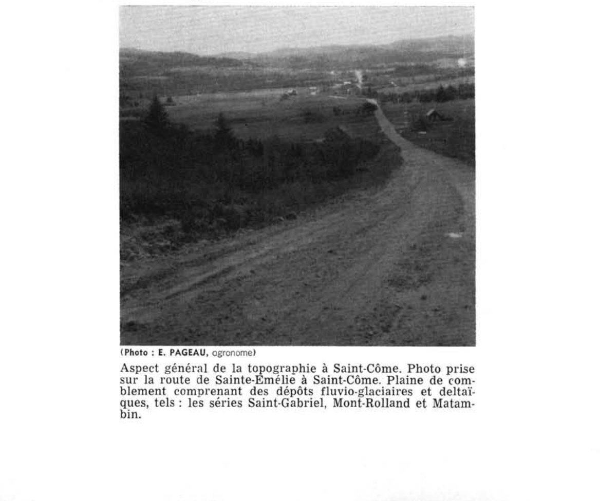

Identification & Caractéristiques Générales
La série Matambin s'est développée sur des dépôts meubles d'origine deltaïque et fluvioglaciaire à forte composante graveleuse. Sur le plan géomorphologique, ces matériaux occupent de petits bassins ou des cuvettes de faible étendue caractérisés par une topographie horizontale à légèrement déprimée, localisés sur les replats et les terrasses inférieures, notamment en bordure de systèmes lacustres ou fluviaux et au sud de la moraine Saint-Narcisse. En raison de sa faible extension spatiale et de limites de cartographie souvent imprécises sur le terrain, cette série est généralement cartographiée en association complexe avec les séries Mont-Rolland et Morin.
Sur le plan morphologique, le profil pédologique présente une texture dominante de loam graveleux ou sablo-graveleux, marquée par une pierrosité abondante à travers toute la masse du dépôt. Le drainage naturel est imparfait en raison de la position topographique en dépression. La dynamique hydropédologique se caractérise par la présence d'un gleyum et par la formation d'un horizon illuvial inférieur qui tend à se concréter et à devenir imperméable lors des cycles de séchage. La réaction chimique de l'ensemble du profil est fortement acide, et la présence de la couche indurée à faible profondeur restreint la percolation verticale de l'eau ainsi que la prospection racinaire.
Les aptitudes agronomiques de la série Matambin sont sévèrement limitées par la topographie déprimée, la pierrosité prononcée, l'acidité marquée du profil et la présence de l'horizon induré imperméable. Ces contraintes techniques et économiques rendent l'exploitation agricole difficile et peu rentable. Par conséquent, la grande majorité des superficies occupées par cette série demeure sous couvert forestier, composé notamment d'épinette noire, de mélèze, de cèdre et de saule, la vocation sylvicole ou le reboisement étant fortement privilégiés par rapport à la mise en culture.
Classification Taxonomique & Environnement Pédologique
| Ordre Pédologique | Podzolique |
|---|---|
| Grand Groupe (SCSS) | Podzol ferro-humique |
| Sous-Groupe Taxonomique | Podzol ferro-humique gleyifié |
| Famille Pédologique | Squelettique-sableuse, mixte sableux, acide |
| Mode de Dépôt Parental | Fluvio-glaciaire |
| Classe de Drainage Naturel | Imparfaitement drainé |
| Régime Thermique & Humidité | Frais / Perhumide |
Description Morphologique du Profil Type
Séquences génétiques des horizons pédologiques caractérisant le profil type représentatif de la série Matambin :
Profil naturel (vierge) — Comté de Champlain
✓ Source : Comté de Champlain — Page 54Couleur Munsell : 10YR 2/1
Structure & Consistance : Polyédrique à granulaire
Description morphologique : Débris végétaux partiellement humifiés noirs (10YR 2/1); pH : 3.7.
Couleur Munsell : 7.5YR 7/2
Structure & Consistance : Polyédrique à granulaire
Description morphologique : Sable limoneux gris rose (7.5YR 7/2); se présente en poches; pH : 4.5.
Couleur Munsell : 10YR 3/2
Structure & Consistance : Polyédrique à granulaire
Description morphologique : Sable brun gris très foncé (10YR 3/2); souventefois très concrétionné en un Ortstein; pH : 5.2.
Couleur Munsell : 10YR 5/2
Structure & Consistance : Polyédrique à granulaire
Description morphologique : Sable graveleux brun gris (10YR 5/2); nombreuses taches de rouille; pH : 5.6.
Couleur Munsell : 2.5Y 6/8
Structure & Consistance : Polyédrique à granulaire
Description morphologique : Sable graveleux à gravier fin jaune olive à jaune olive clair (2.5Y 6/8-6/4); pH : 5.8.
Profil représentatif — Comté de Maskinongé
✓ Source : Comté de Maskinongé — Page 61Couleur Munsell : 5YR 4/2
Structure & Consistance : Granulaire
Description morphologique : Loam sablo-graveleux, brun foncé (5YR 4/2) structure granulaire, pH : 5.5.
Couleur Munsell : 7.5YR 7/2
Structure & Consistance : Polyédrique à granulaire
Description morphologique : Sable loameux, gris rose (7.5YR 7/2) disposé en poches.
Couleur Munsell : 2.5YR 4/6
Structure & Consistance : Polyédrique à granulaire
Description morphologique : Sable graveleux, rouge (2.5YR 4/6) très dur, formation d'ortstein, pH : 5.5.
Couleur Munsell : 7.5YR 6/6
Structure & Consistance : Polyédrique à granulaire
Description morphologique : Sable graveleux, jaune rouge (7.5YR 6/6) durci et tacheté de rouille, pH : 5.7.
Couleur Munsell : 10YR 5/8
Structure & Consistance : Polyédrique à granulaire
Description morphologique : Sable graveleux, brun jaune (10YR 5/8) très compact, rouillé, pH : 5.8.
Profil cultivé (agricole) — Comté de Portneuf
✓ Source : Comté de Portneuf — Page 91Couleur Munsell : 10YR 2/2, 10YR 3/3
Structure & Consistance : Polyédrique à granulaire
Description morphologique : Sable grossier loameux graveleux et caillouteux brun très foncé (10YR 2/2 h), brun foncé à gris (10YR 3/3 à 5/1 s) ; particulaire ; très friable ; racines abondantes, moyennes ; très abondantes, fines à microscopiques, non-orientées, exo-agrégats ; gravier et cailloux (30%), arrondis à sub-arrondis, limite abrupte, ondulée ; pH : 4.7.
Couleur Munsell : 10YR 5.5/2, 7.5YR 7/2, 10YR 7/2
Structure & Consistance : Polyédrique à granulaire
Description morphologique : Sable grossier loameux graveleux et caillouteux brun-gris à gris-brun clair (10YR 5.5/2 h), gris-rose à gris clair (7.5YR 7/2 à 10YR 7/2 s) ; particulaire ; très friable ; racines peu abondantes, moyennes ; très abondantes, fines à microscopiques, non-orientées, exo-agrégats ; gravier et cailloux (30%), arrondis ; limite abrupte, interrompue ; pH : 4.5.
Couleur Munsell : 2.5YR 5/4, 5YR 4/4
Structure & Consistance : Polyédrique à granulaire
Description morphologique : Sable grossier loameux très graveleux et caillouteux brun-rouge (2.5YR 5/4 h, 5YR 4/4 s) ; taches peu nombreuses, faibles ; particulaire ; meuble ; racines peu abondantes, fines à microscopiques, non-orientées, exo-agrégats ; gravier et cailloux (60-80%), arrondis à sub-arrondis ; limite graduelle, ondulée ; pH : 5.2.
Profil forestier / boisé — Comté de Trois-rivières
✓ Source : Comté de Trois-rivières — Page 58Couleur Munsell : Non précisée
Structure & Consistance : Polyédrique à granulaire
Description morphologique : Débris végétaux partiellement minéralisés noirs; pH : 4.0.
Couleur Munsell : 7.5YR 7/2
Structure & Consistance : Polyédrique à granulaire
Description morphologique : Sable loameux gris rose (7.5YR 7/2); pH : 4.5.
Couleur Munsell : 5YR 4/3, 10YR 5/8, 2.5Y 4/2
Structure & Consistance : Polyédrique à granulaire
Description morphologique : Sable loameux et graveleux, brun rouge (5YR 4/3) à brun jaune (10YR 5/8) avec taches de gley brun gris foncé (2.5Y 4/2), faiblement concrétionné, ferme; pH : 5.0.
Couleur Munsell : 2.5Y 6/2, 7.5YR 4/4
Structure & Consistance : Polyédrique à granulaire
Description morphologique : Sable loameux et graveleux, gris brun clair (2.5Y 6/2); avec taches de gley brun foncé (7.5YR 4/4) concrétionné, assez ferme; pH : 5.6.
Couleur Munsell : 2.5Y 6/8
Structure & Consistance : Polyédrique à granulaire
Description morphologique : Sable graveleux jaune olive (2.5Y 6/8); pH : 5.8.
Profil cultivé (agricole) — Comté de Québec
✓ Source : Comté de Québec — Page 44Couleur Munsell : 10YR 2/2, 10YR 3/3
Structure & Consistance : Polyédrique à granulaire
Description morphologique : Sable grossier loameux graveleux et caillouteux brun très foncé (10YR 2/2 h), brun foncé à gris (10YR 3/3 à 5/1 s); particulaire; très friable; racines abondantes, moyennes; très abondantes, fines à microscopiques, non-orientées, exo-agrégats; gravier et cailloux (30%), arrondis à subarrondis, limite abrupte, ondulée; épaisseur de 8 à 20 cm; pH: 4,7.
Couleur Munsell : 10YR 5.5/2, 7.5YR 7/2, 10YR 7/2
Structure & Consistance : Polyédrique à granulaire
Description morphologique : Sable grossier loameux graveleux et caillouteux brun-gris à gris-brun clair (10YR 5.5/2 h), gris-rose à gris clair (7.5YR 7/2 à 10YR 7/2 s); particulaire; très friable; racines peu abondantes, moyennes très abondantes, fines à microscopiques, non-orientées, exo-agrégats; gravier et cailloux (30%), arrondis; limite abrupte, interrompue; épaisseur de 0 à 7 cm; pH: 4,5.
Couleur Munsell : 2.5YR 5/4, 5YR 4/4
Structure & Consistance : Polyédrique à granulaire
Description morphologique : Sable grossier loameux très graveleux et caillouteux brun-rouge (2.5YR 5/4 h, 5YR 4/4 s); taches peu nombreuses, faibles; particulaire; meuble; racines peu abondantes, fines à microscopiques, non-orientées, exo-agrégats; gravier et cailloux (60-80%), arrondis à subarrondis; limite graduelle, ondulée; épaisseur de 8 à 20 cm; pH: 5,2.
Couleur Munsell : 2.5YR 3/4, 5YR 4/4
Structure & Consistance : Polyédrique à granulaire
Description morphologique : Sable grossier très graveleux et caillouteux brun-rouge foncé (2.5YR 3/4 h), brun-rouge (5YR 4/4 s); taches peu nombreuses, faibles; particulaire; meuble; racines peu abondantes, fines à microscopiques, non-orientées, exo-agrégats; gravier et cailloux (60-80%), arrondis à subarrondis; limite graduelle, régulière; épaisseur de 14 à 18 cm; pH: 5,1.
Couleur Munsell : 5YR 3/4, 7.5YR 6/6
Structure & Consistance : Polyédrique à granulaire
Description morphologique : Sable grossier très graveleux et caillouteux brun-rouge foncé (5YR 3/4 h), jaune-rouge (7.5YR 6/6 s); particulaire; meuble; racines peu abondantes, fines à microscopiques, non-orientées, exo-agrégats; gravier et cailloux (80%), arrondis à subarrondis; limite distincte; régulière; épaisseur de 0 à 15 cm; pH: 5.4.
Couleur Munsell : 7.5YR 3/2, 7.5YR 5/6, 10YR 5/6
Structure & Consistance : Polyédrique à granulaire
Description morphologique : Sable grossier très graveleux et caillouteux brun foncé (7.5YR 3/2 h), brun vif à brun-jaune (7.5YR 5/6 à 10YR 5/6 s); particulaire; meuble; racines très peu abondantes, fines à microscopiques, non-orientées, exo-agrégats; gravier et cailloux (80%), arrondis à subarrondis; pH: 5.6.
Profils Photographiques & Planches de Terrain
Documents iconographiques, figures pédologiques et coupes de terrain documentées dans les mémoires d'inventaire pour de la série Matambin :

Propriétés Physico-Chimiques & Analyses de Laboratoire
| Horizon | Prof. (pces/cm) | Sable % | Limon % | Argile % | pH | C % | N % | Ca éch. | Mg éch. | K éch. | H+ éch. | Bases tot. | C.E.C. (meq/100g) | Saturation % | ||||||||||||
|---|---|---|---|---|---|---|---|---|---|---|---|---|---|---|---|---|---|---|---|---|---|---|---|---|---|---|
| Ap | 0-12 | 29.0 | 27.0 | 13.0 | 9.0 | 78.0 | 18.0 | 4.0 | 4.7 | 4.4 | 4.68 | 0.31 | 1.03 | 0.36 | 0.76 | 0.50 | 0.54 | 0.50 | 3.10 | 0.23 | 0.14 | 0.03 | 14.0 | 7.50 | 20 | 12 |
| Ae | 12-19 | 28.0 | 28.0 | 15.0 | 11.0 | 82.0 | 15.0 | 3.0 | 4.5 | 4.3 | 1.12 | 0.06 | 0.37 | 0.11 | 0.17 | 0.05 | 0.13 | 0.12 | 0.45 | 0.06 | 0.02 | 0.01 | 2.5 | 3.04 | 18 | 6 |
| Bhfgj1 | 19-39 | 50.0 | 14.0 | 10.0 | 6.0 | 80.0 | 17.0 | 3.0 | 5.2 | 4.7 | 9.35 | 0.35 | 9.45 | 3.72 | 2.00 | 9.30 | 0.76 | 3.48 | 0.45 | 0.07 | 0.02 | 0.01 | 24.0 | 24.55 | 2 | 32 |
| Bhfgj2 | 39-55 | 52.0 | 18.0 | 10.0 | 7.0 | 87.0 | 10.0 | 3.0 | 5.1 | 4.8 | 8.00 | 0.35 | 8.20 | 2.99 | 1.87 | 7.80 | 0.73 | 2.63 | 0.45 | 0.08 | 0.04 | 0.01 | 20.0 | 20.58 | 3 | 24 |
| BC | 55-70 | 85.0 | 4.0 | 4.0 | 2.0 | 95.0 | 2.0 | 3.0 | 5.4 | 4.9 | 2.46 | 0.10 | 3.80 | 1.28 | 0.70 | 2.27 | 0.33 | 0.99 | 0.85 | 0.07 | 0.03 | 0.02 | 6.5 | 7.47 | 13 | 76 |
| C | à 70 cm | 81.0 | 5.0 | 3.0 | 3.0 | 92.0 | 5.0 | 3.0 | 5.6 | 5.1 | 2.30 | 0.12 | 3.60 | 1.10 | 0.81 | 2.35 | 0.37 | 0.80 | 1.90 | 0.08 | 0.07 | 0.02 | 5.0 | 7.07 | 29 | 64 |
Particularités Régionales, Phases & Variantes Pédologiques
Déclinaisons régionales, faciès texturaux, phases d'érosion ou de pierrosité et variantes cartographiées par étude pour de la série Matambin :
| Étude Régionale | Symbole | Appellation / Phase / Variante | Différenciation avec la série type (Analyse pédologique) |
|---|---|---|---|
| Comté de Chambly | SB3 |
Saint-Blaise loam | Modalité modale de référence (type de base de la série). |
SB3h |
Saint-Blaise loam humifère | Phase humifère enrichie en matière organique superficielle. | |
SB4 |
Saint-Blaise loam limono-argileux | Faciès argileux plus lourd et compact que le loam de référence. | |
SB4b |
Saint-Blaise loam limono-argileux 3-8 % de pente | Faciès argileux plus lourd et compact que le loam de référence. | |
SB4m |
Saint-Blaise loam limono-argileux mince | Phase mince sur substrat rocheux (< 50 cm); Faciès argileux plus lourd et compact que le loam de référence. | |
SB4p |
Saint-Blaise loam argileux pierreux | Phase pierreuse (abondance de cailloux et blocs en surface); Faciès argileux plus lourd et compact que le loam de référence. | |
SB5 |
Saint-Blaise argile limoneuse | Faciès argileux plus lourd et compact que le loam de référence. | |
SBa3 |
Saint-Blaise variante non calcaire loam | Variante décarbonatée (non calcaire) à réaction plus acide. | |
SBa4 |
Saint-Blaise variante non calcaire loam limono-argileux | Variante décarbonatée (non calcaire) à réaction plus acide; Faciès argileux plus lourd et compact que le loam de référence. | |
| Comté de Châteauguay | B |
Saint-Blaise loam argileux | Faciès argileux plus lourd et compact que le loam de référence. |
| Comté de Iberville | SB |
Saint-Blaise argileux sur till loameux fin alcalin | Phase peu profonde sur till; Faciès argileux plus lourd et compact que le loam de référence. |
| Comté de Laprairie | SB3 |
Saint-Blaise loam | Conforme à la série type de référence (caractéristiques texturales et drainage identiques). |
SB3h |
Saint-Blaise loam humifère | Phase humifère enrichie en matière organique superficielle. | |
SB3p |
Saint-Blaise loam légèrement à modérément pierreux | Phase légèrement à modérément pierreuse (obstruction mécanique modérée). | |
SB4 |
Saint-Blaise loam limono-argileux | Faciès argileux plus lourd et compact que le loam de référence. | |
SB4p |
Saint-Blaise loam argileux légèrement à modérément pierreux | Phase légèrement à modérément pierreuse (obstruction mécanique modérée); Faciès argileux plus lourd et compact que le loam de référence. | |
SB5 |
Saint-Blaise argile limoneuse | Faciès argileux plus lourd et compact que le loam de référence. | |
| Les sols de l’Île de Montréal | Bl |
Saint-Blaise loam | Conforme à la série type de référence (caractéristiques texturales et drainage identiques). |
Bl-a |
Saint-Blaise argile mince | Phase mince sur substrat rocheux (< 50 cm); Faciès argileux plus lourd et compact que le loam de référence. | |
| Comté de Napierville | SB |
Saint-Blaise | Conforme à la série type de référence (caractéristiques texturales et drainage identiques). |
SBh |
Saint-Blaise humifère | Phase humifère enrichie en matière organique superficielle. | |
| Comté de Rouville | SB3 |
Saint-Blaise loam | Conforme à la série type de référence (caractéristiques texturales et drainage identiques). |
SB4 |
Saint-Blaise loam limono-argileux | Faciès argileux plus lourd et compact que le loam de référence. | |
SB4p |
Saint-Blaise loam limono-argileux légèrement à modérément pierreux | Phase légèrement à modérément pierreuse (obstruction mécanique modérée); Faciès argileux plus lourd et compact que le loam de référence. | |
| Comté de Saint-jean | SB |
Saint-Blaise loam | Conforme à la série type de référence (caractéristiques texturales et drainage identiques). |
SBbp |
Saint-Blaise loam 3-8% de pente légèrement à modérément pierreux | Phase légèrement à modérément pierreuse (obstruction mécanique modérée). | |
| Comté de Verchères | SB4 |
Saint-Blaise loam limono-argileux | Faciès argileux plus lourd et compact que le loam de référence. |
SB5 |
Saint-Blaise argile limoneuse | Faciès argileux plus lourd et compact que le loam de référence. | |
SB5m |
Saint-Blaise argile limoneuse mince | Phase mince sur substrat rocheux (< 50 cm); Faciès argileux plus lourd et compact que le loam de référence. | |
| Comté de Berthier | Mb |
Matambin sable limoneux graveleux | Phase graveleuse à perméabilité accrue et réserve utile diminuée; Faciès plus limoneux (limon), offrant une forte rétention en eau mais vulnérable à la battance; Drainage imparfaitement drainé (distinct du drainage de référence mal drainé); Classification sous-groupe : Podzol ferro-humique gleyifié (vis-à-vis de Gleysol humique orthique). |
| Comté de Champlain | Mb |
Matambin loam graveleux | Phase graveleuse à perméabilité accrue et réserve utile diminuée; Drainage imparfaitement drainé (distinct du drainage de référence mal drainé); Classification sous-groupe : Podzol ferro-humique gleyifié (vis-à-vis de Gleysol humique orthique). |
| Comté de Joliette | Mb |
Matambin loam sableux graveleux | Phase graveleuse à perméabilité accrue et réserve utile diminuée; Faciès textural plus filtrant (loam sableux au lieu de loam); Drainage imparfaitement drainé (distinct du drainage de référence mal drainé); Classification sous-groupe : Podzol ferro-humique gleyifié (vis-à-vis de Gleysol humique orthique). |
| Comté de Maskinongé | Mb |
Matambin sable loameux graveleux | Phase graveleuse à perméabilité accrue et réserve utile diminuée; Faciès sableux très filtrant et pauvre en éléments nutritifs vis-à-vis du loam de référence; Drainage imparfaitement drainé (distinct du drainage de référence mal drainé); Classification sous-groupe : Podzol ferro-humique gleyifié (vis-à-vis de Gleysol humique orthique). |
| Comté de Portneuf | Mb |
Matambin sable grossier loameux graveleux et caillouteux | Phase graveleuse à perméabilité accrue et réserve utile diminuée; Faciès sableux très filtrant et pauvre en éléments nutritifs vis-à-vis du loam de référence; Drainage imparfaitement drainé (distinct du drainage de référence mal drainé); Classification sous-groupe : Podzol ferro-humique gleyifié (vis-à-vis de Gleysol humique orthique). |
| Comté de Québec | Mb |
Matambin sable grossier loameux graveleux et caillouteux | Phase graveleuse à perméabilité accrue et réserve utile diminuée; Faciès sableux très filtrant et pauvre en éléments nutritifs vis-à-vis du loam de référence; Drainage imparfaitement drainé (distinct du drainage de référence mal drainé); Classification sous-groupe : Podzol ferro-humique gleyifié (vis-à-vis de Gleysol humique orthique). |
| Comté de Trois-rivières | Mb |
Matambin sable loameux graveleux | Phase graveleuse à perméabilité accrue et réserve utile diminuée; Faciès sableux très filtrant et pauvre en éléments nutritifs vis-à-vis du loam de référence; Drainage imparfaitement drainé (distinct du drainage de référence mal drainé); Classification sous-groupe : Podzol ferro-humique gleyifié (vis-à-vis de Gleysol humique orthique). |
Distribution Pédo-Paysagère & Représentativité Cartographique (Couverture PPS 2026)
- Mont-Rolland loam sableux (MTA) — co-occurrente dans 86 polygone(s)
- Morin sable (MOI) — co-occurrente dans 18 polygone(s)
- Deligny sable limoneux (DIY) — co-occurrente dans 14 polygone(s)
Aptitudes Agronomiques, Hydropédologie & Conservation des Sols
Indicateurs Hydropédologiques & Vulnérabilité à l'Érosion (BDHP 2026)
Interprétation BDHP : Potentiel de ruissellement faible. Sols à infiltration rapide (sables profonds, graviers bien drainés).
Classement selon l'Inventaire des Terres du Canada (ITC / CLI) : Classe 3w.
- Potentiel agricole : Terroir adapté aux cultures régionales selon la texture dominante et la régie de drainage.
- Contraintes majeures : Imparfaitement drainé. Risque d'engorgement temporaire ou d'excès d'eau printanier.
- Gestion & Aménagement : Drainage souterrain ou superficiel préconisé sur les terres planes. Chaulage et apport organique régulier selon les bilans agronomiques.
- Cultures adaptées : Grandes cultures (maïs, soya, céréales), prairies fourragères et cultures maraîchères selon le contexte géomorphologique.